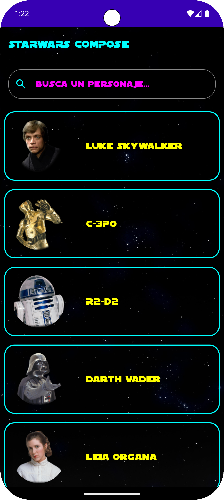
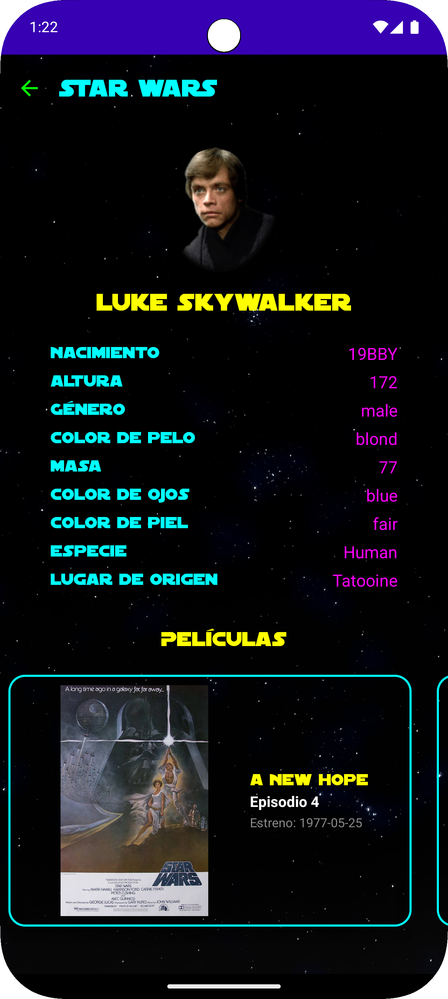
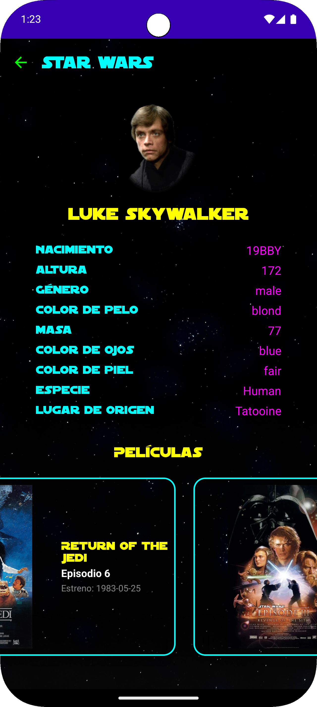

StarWars Compose
Aplicación Android desarrollada para practicar el consumo de APIs REST con Jetpack Compose. Conecta con la API pública SWAPI para mostrar personajes del universo Star Wars.
Al pulsar en un personaje se accede a su detalle completo — datos biográficos, especie, planeta de origen — y las películas en las que aparece con su carátula y fecha de estreno.
Funcionalidades clave
- Listado de personajes: Carga desde SWAPI con foto, nombre y buscador en tiempo real.
- Detalle de personaje: Nacimiento, altura, género, color de pelo, masa, ojos, piel, especie y planeta.
- Películas del personaje: Carátula, título, episodio y fecha de estreno en carrusel horizontal.
- Carga paralela: Planetas, especies y películas se resuelven simultáneamente con async/awaitAll.
- Buscador: Filtrado por nombre sin llamadas extra a la API.
- Navegación: Paso de argumentos entre pantallas con NavHost.
Tecnologías usadas
Lenguaje: Kotlin
UI: Jetpack Compose
Red: Retrofit + kotlinx.serialization
Imágenes: Coil
Inyección de dependencias: Hilt
Otros: StateFlow, Navigation Compose, coroutines.
Galería de pantallas



Decisiones técnicas
Carga paralela con async/awaitAll: Planetas, especies y películas se resuelven en paralelo en lugar de secuencialmente, reduciendo el tiempo de carga total.
ViewModel compartido: Un único StarWarsViewModel inyectado con Hilt gestiona el estado de ambas pantallas, evitando recargas innecesarias al navegar.
Serialización con kotlinx: Uso de @SerialName para mapear los campos snake_case de la API directamente al modelo sin capas intermedias.